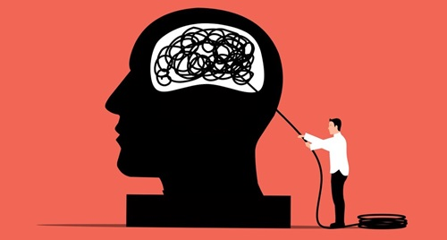

Qu'est-ce que l'hypnose?
L’hypnose est un état modifié de conscience, naturel et accessible à tous, entre veille et sommeil. Dans cet état, l’attention est focalisée et l’esprit devient plus réceptif aux suggestions positives. Utilisée à des fins thérapeutiques, l’hypnose permet d’explorer l’inconscient pour dépasser certains blocages, changer des comportements ou activer ses ressources intérieures.

Sujets que j'accompagne
Hypnose Thérapeutique – ADULTES
Atteinte d’objectifs personnels et professionnels
Accompagnement dans les différents changements et défis de la vie
Communication avec soi et les autres
Confiance, estime et amour de soi
Stress et ce qui tourne autour du stress
Difficultés à s’endormir
Gestion des émotions : peurs, accompagnement dans le deuil, etc.
Parler en public
Gestion des conflits
Arrêt du tabac, accompagnement de certaines addictions (sauf sevrage)
Perte de poids (dans le cadre d’une démarche globale de changement de vie)
Acouphènes non physiologiques
Hypnose Thérapeutique – ENFANTS à partir de 5 ans
Stress de séparation, peurs nocturnes
Colères et impulsivité
Confiance en soi, sociabilisation
Tristesse
Énurésie, encoprésie, trichotillomanie
Difficultés à l'endormissement, réveils nocturnes
Manque de concentration, accompagnement d'apprentissage, manque de motivation, stress de performance
Addiction aux jeux vidéo
Peurs des piqûres, etc.
D'où vient l'hypnose d'aujourd'hui?
L’hypnose moderne trouve ses origines au XVIIIe siècle avec Mesmer, puis se développe au XIXe avec James Braid. Elle s’inspire aussi de pratiques anciennes de transe. Aujourd’hui, enrichie par les neurosciences, elle est reconnue pour accompagner le changement, apaiser le stress et modifier les comportements.
Hypnose traditionnelle VS Hypnose ericksonienne VS Nouvelle hypnose
L’hypnose traditionnelle utilise des suggestions directes et autoritaires pour induire le changement, tandis que l’hypnose ericksonienne, plus souple, mise sur les métaphores, les suggestions indirectes et le respect du rythme de la personne. De cette approche est née la nouvelle hypnose, qui combine les apports d’Erickson avec des techniques modernes issues de la communication et du développement personnel, pour offrir un accompagnement encore plus personnalisé et orienté vers les ressources intérieures.